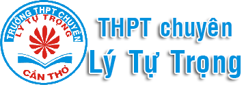

LWAI - Web học tập thực tế
- LWAI là một web học tập tiếng anh được thiết kế đặc biệt để tối ưu hóa trải nghiệm học tập thông qua sự tích hợp của Trí tuệ Nhân tạo (AI) kèm theo bộ Flashcard. Với mục tiêu chính là hỗ trợ người học phát triển kỹ năng tiếng Anh một cách linh hoạt và hiệu quả, LWAI đem đến cho người dùng một cách tiếp cận mới lạ và đầy sáng tạo.
- Flashcard, một công cụ học tập cổ điển, được kết hợp hình ảnh cùng với mô hình nhận diện hình ảnh trên web. Bạn không chỉ học từ những bảng thẻ thông thường, mà còn được đắm chìm vào một môi trường tương tác động với AI. Các flashcard kết hợp với website không chỉ giúp bạn ghi nhớ từ vựng và ngữ pháp một cách hiệu quả mà còn mở rộng khả năng sáng tạo của bạn thông qua các câu hỏi và bài tập độc đáo.